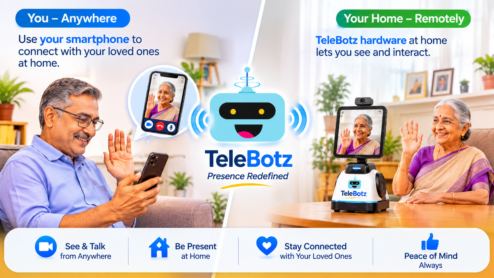

Baby at home
Stepped out for quick shopping while your baby is sleeping? Connect to check in from wherever you are.
Use your smartphone to connect with TeleBotz hardware placed at home. See what is happening and interact with the people or pets you care about, even when you are somewhere else.
See how TeleBotz works
There are everyday moments when you may want to check in, see what is happening, or simply connect.
Stepped out for quick shopping while your baby is sleeping? Connect to check in from wherever you are.
Wondering how your pet is doing at home? Take a look and interact remotely.
Unable to reach your elderly parents by phone? Connect to check in and speak with them.
TeleBotz is designed around a smartphone at the user's end and a smartphone running the Robot App at the remote location, with optional hardware to support the setup.
Use the smartphone you already carry to connect from wherever you are.
Connect using available Wi-Fi or mobile data services.
See and communicate with the remote location, rather than only viewing a camera feed.
Designed to support an answering experience without requiring someone at home to manually accept every connection.
Connect when you need to check in, rather than relying only on a scheduled video call.
Support a quiet check-in experience when a conversation is not needed.
Feature availability depends on the final app and hardware configuration. TeleBotz is not a replacement for emergency services or dedicated safety monitoring.
We are exploring how smartphone-powered telepresence can make it easier to check in on home while away.
Discuss this use case